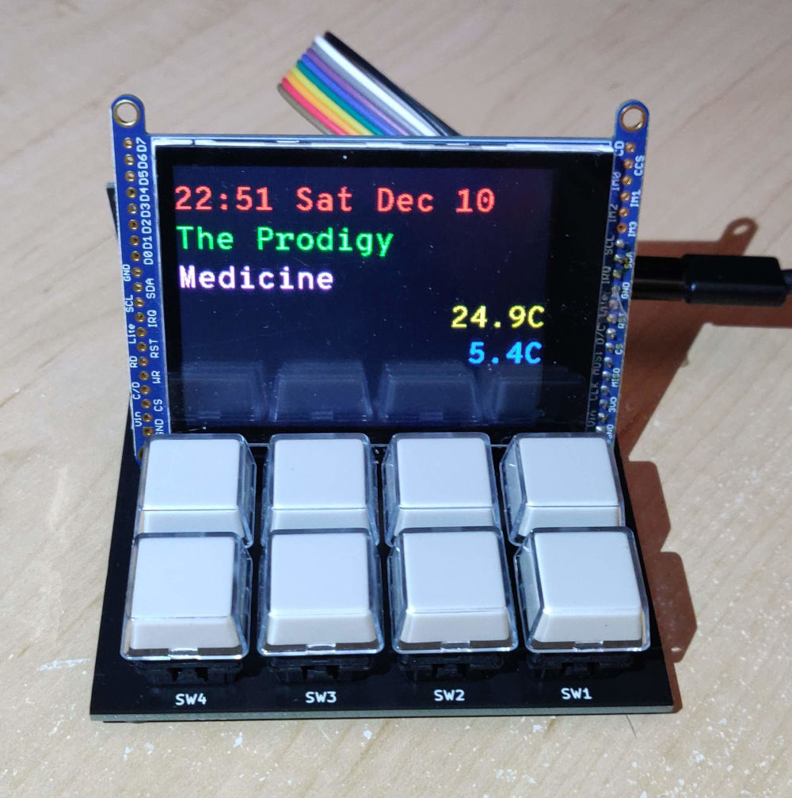
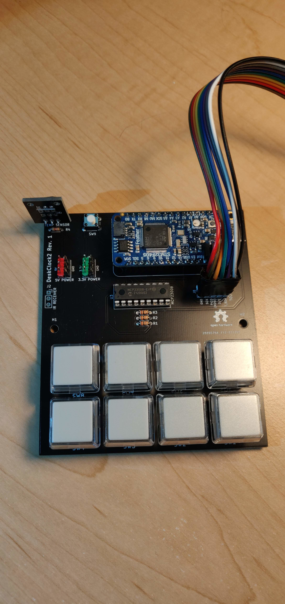
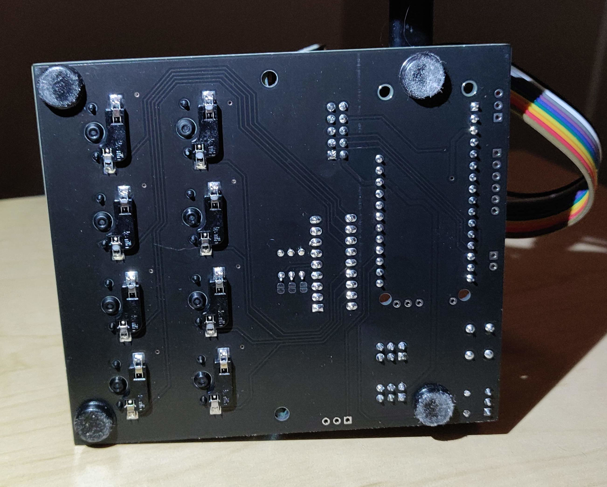
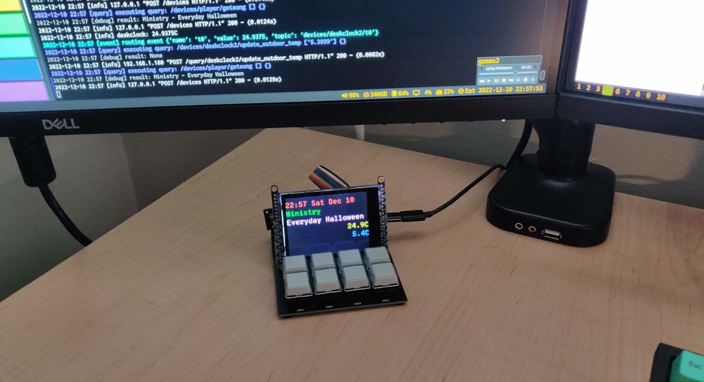
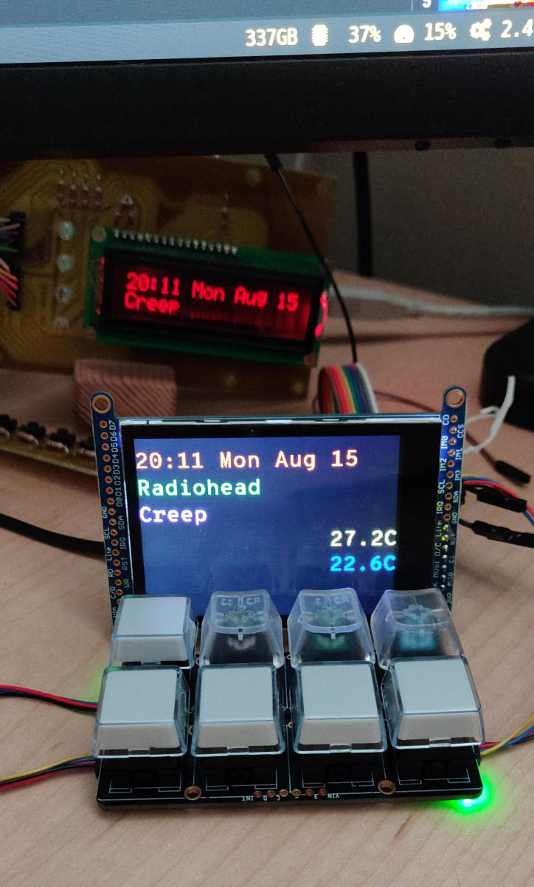

DeskClock 2
Started July 31, 2022
A desktop companion device for displaying status and controlling things without interrupting flow. This is a replacement to my previous deskclock project which was originally built in 2009 and later revamped with an Arduino in 2012.
The new design has an LCD screen, 8 CherryMX buttons, a temperature sensor, an IR receiver, and a USB connection to my desktop computer. The controller is a Adafruit Feather STM32F405 Express programmed using the Arudino framework. The computer is running Nerve, which can perform actions in response to the buttons, and display information like the current time, current song playing on my computer, and indoor and outdoor temperature (where the outdoor temperature is broadcast from another computer, which receives it from a wireless sensor outside). The buttons are currently configured to control the music player on my computer, as well as toggle some lights in my computer room.
Custom PCB

Above is the assembled board. It was designed in November 2022, and assembled in December.

Top down view of the board without the LCD resting on top. It's a pretty simple design with an MCP23008 I2C GPIO chip for reading the buttons.

On the bottom, you can see the Kali solderless keyboard button sockets, which are compatible with CherryMX switches. They were surprisingly easy to install, align, and solder, using a pre-made KiCAD footprint. The sockets snap snugly into the board with no room to wiggle. I also stuck some rubber feet to the bottom to clear the sockets from touching the desk, and also to keep it in place when pressing buttons.

The assembled board with the LCD floating (not securely attached). On the monitor above, you can see the Python program's log messages showing it receiving the outdoor temperature and sending it to DeskClock2, and querying the current song to be displayed.
A mistake was made on the board for the IR receiver, which has the power pins reversed. I attached a 3 pin header to the board, and with some shrink wrap on one of the pins, bent the power pins to be reversed when plugged in.
Prototype

Above is the prototype, with the old deskclock to be replaced visible in the background
The prototype is built using an Adafruit Feather STM32F405 Express with two NeoKeys and a 2.8 inch LCD.
Programming with Arduino
In the Arduino IDE:
- select board "Generic STM32F4 Series"
- select board part number "Adafruit Feather STM32F405"
- select USB support "CDC (generic 'Serial' supersede USART)
- select upload method "STM32CubeProgrammer (DFU)"
To put the device in programming mode, hold down the reset button on the Feather, and the Flash button on the board, and then release the reset button first.
Communication
The Feather appears as a generic serial-over-USB device. The protocol is a very simple text format where each line has a sub-device name/number, followed by an equals sign, and then the data. For a button, the device would send "B5=1" when the button is pressed, and "B5=0" when released, where the number in the name corresponds to the button number between 0 and 7. The temperature is sent back as "T0=23.0" where the value is in Celsius.
For the LCD, each of 5 lines is drawn with a separate line to allow them to be updated independently to avoid flicker due to the slow updated time of the LCD over SPI. Each line has the form "L2=Some Text" where the number is the line number to updated, between 0 and 4. The text can contain a simple escape code for setting the text colour, of the form "\x1B[3m" which would set the colour to "3" (green).
The LCD is a passive device, displaying whatever the computer tells it to. The temperature has to be sent to the computer, and the computer needs to update the LCD with that information to display it. On the Nerve/Computer side, the temperature is also data logged along with other sensors around the house, so that they can all be displayed on a graph through the web interface.
The IR sensor returns data as "I0=N:40:1", where "N" is NEC protocol, "40" is the address number of the remote control, and "1" in the command code.
Get the Source
https://github.com/transistorfet/deskclock2/Or clone with:
git clone git@github.com:transistorfet/deskclock2